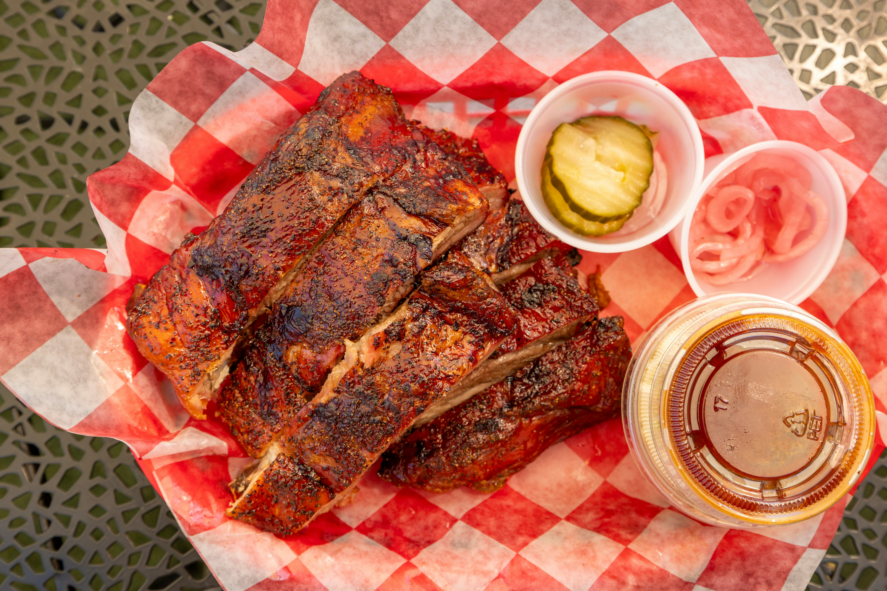

HOME
SUYA RECIPES

Description
Suya is a beloved street food from Nigeria, made by skewering thin slices
of meat—typically beef, chicken, or ram—and coating them in a
bold, spicy peanut-based seasoning known as yaji. The meat is
grilled over open charcoal, giving it a smoky, slightly charred
flavor, while the spice mix adds heat, nuttiness, and a rich
aroma. It’s usually served hot off the grill with fresh sliced
onions, tomatoes, and cabbage, often with an extra sprinkle of
spice on top. Simple but intensely flavorful, suya is known for
its irresistible combination of heat, smoke, and
savory depth.
Ingredient
- 500g beef (sirloin or flank, thinly sliced)
- 3 tbsp roasted peanuts (ground)
- 1–2 tsp cayenne pepper (adjust to taste)
- 1 tsp paprika
- 1 tsp ground ginger
- 1 tsp garlic powder
- 1 tsp onion powder
- 1 bouillon cube (crushed)
- Salt to taste
- 2–3 tbsp vegetable oil
Steps
- Slice the meat thinly – the thinner, the better for that authentic texture.
- Coat with oil – helps the spices stick.
- Rub with spice mix – coat generously and let it marinate for at least 1 hour (overnight is best).
- Thread onto skewers (optional but traditional).
- Grill over charcoal (best) or use an oven/grill pan. Turn occasionally.
- Brush lightly with oil while grilling for extra juiciness.
- Sprinkle extra spice after grilling for that classic finish.
Photo by nobleseed nobleseed on Unsplash